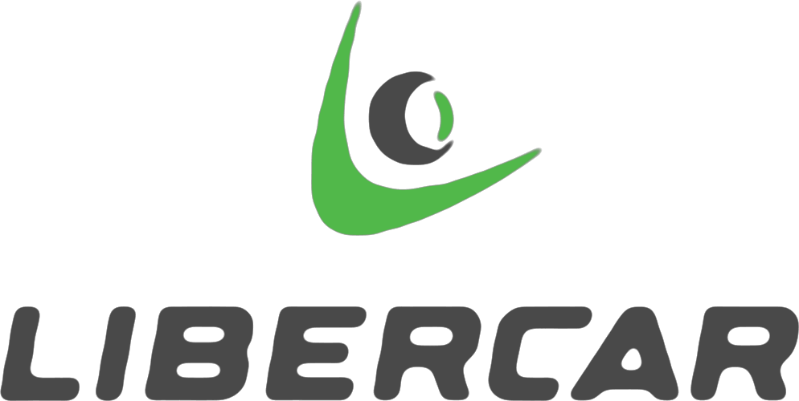

A VIAGEM DE
FIM DE ANO
ESTÁ CHEGANDO
ESTRADA CHEIA
PEDE
PNEU NOVO
TROQUE SEUS PNEUS
ANTES
DE PEGAR
A ESTRADA
Sempre tem uma

perto
de você.
TROQUE SEUS PNEUS
ANTES DA VIAGEM!
Compre
online
e instale
na loja mais próxima.
www.libercar.com.br
BETHÂNIA · CENTRO · TIMÓTEO